| 1. 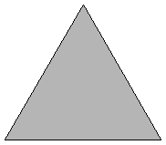 | 2. 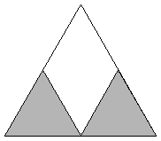 | 3. 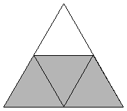 | ||
| s = 1 Trivial. | s = 2 Trivial. | s = 2 Trivial. |
| 4. 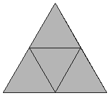 | 5. 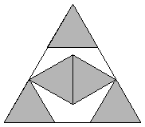 | 6. 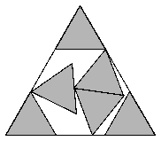 | ||
| s = 2 Trivial. | s = 1 + √3 = 2.732+ Proved by Erich Friedman in 1997. | s = 13/8 + 3√13/8 = 2.977+ Found by Maurizio Morandi in August 2008. |
| 7. 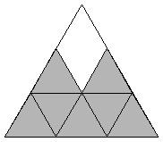 | 8. 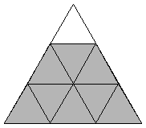 | 9. 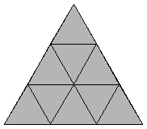 | ||
| s = 3 Found by Erich Friedman in 1997. | s = 3 Found by Erich Friedman in 1997. | s = 3 Trivial. |
| 10. 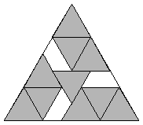 | 11. 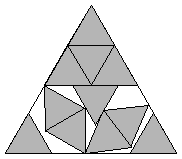 | 12. 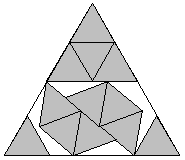 | ||
| s = 3.5 Found by Erich Friedman in 1997. | s = 9/4 + 9√21/28 = 3.722+ Found by Erich Friedman in 1997. | s = 2 + 2cos(π/9) = 3.879+ Found by David W. Cantrell in July 2007. |
| 13. 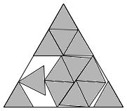 | 14. 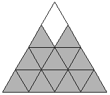 | 15. 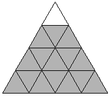 | ||
| s = 3.992+ Found by Maurizio Morandi in May 2008. | s = 4 Trivial | s = 4 Trivial |
| 16. 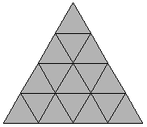 | 17. 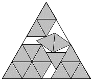 | 18. 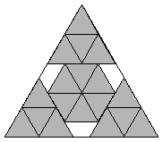 | ||
| s = 4 Trivial | s = 4.465+ Found by Maurizio Morandi in May 2008. | s = 4.5 Found by Erich Friedman in 1997. |
| 19. 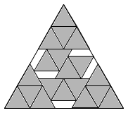 | 20. 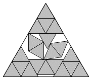 | 21. 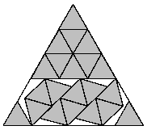 | ||
| s = 14/3 = 4.666+ Found by Maurizio Morandi in May 2008. | s = 33/8 + 9√21/56 = 4.861+ Found by Maurizio Morandi in May 2008. | s = 4.923+ Found by Maurizio Morandi in May 2008. |
| 22. 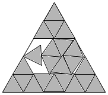 | 23. 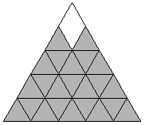 | 24. 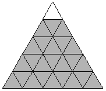 | ||
| s = 4.996+ Found by Maurizio Morandi in May 2008. | s = 5 Trivial | s = 5 Trivial |
| 25. 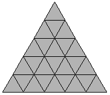 | 26. 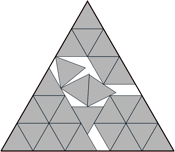 | 27. 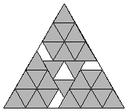 | ||
| s = 5 Trivial | s = 5.408+ Found by Maurizio Morandi in May 2008. | s = 5.5 Found by Erich Friedman in 1997. |
| 28. 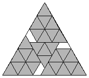 | 29.
| 30. 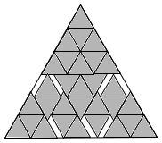 | ||
| s = 5.5 Found by Erich Friedman in 1997. | s = 17/3 = 5.666+ Found by David W. Cantrell in July 2007. | s = 23/4 = 5.75 Found by Maurizio Morandi in May 2008. |